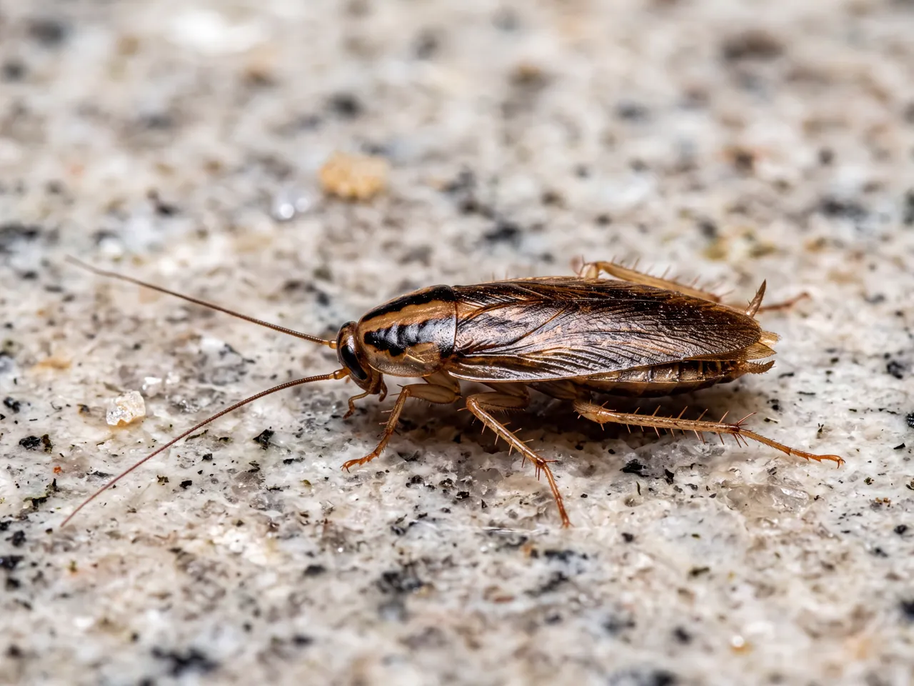
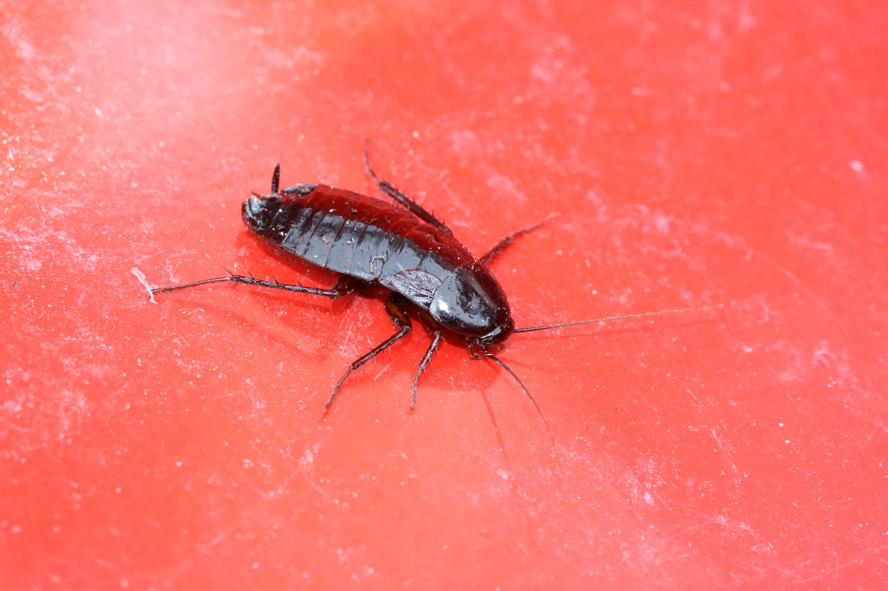
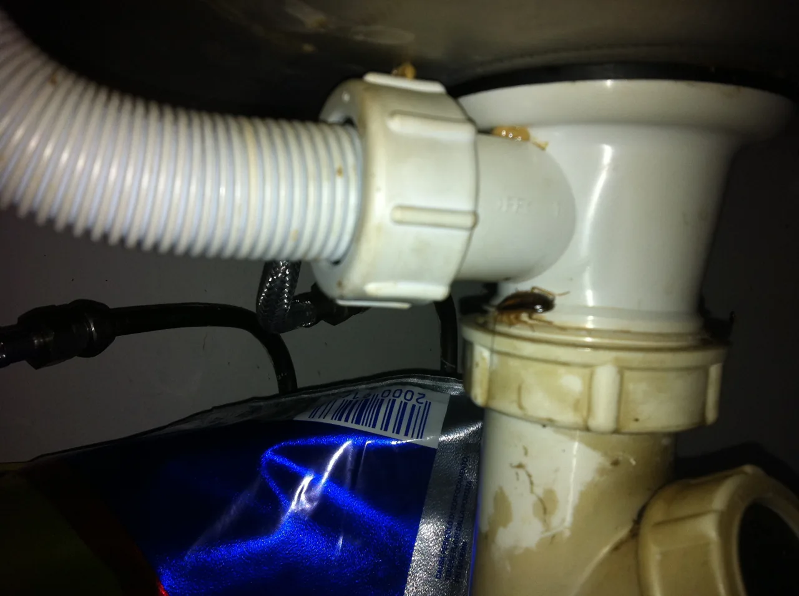
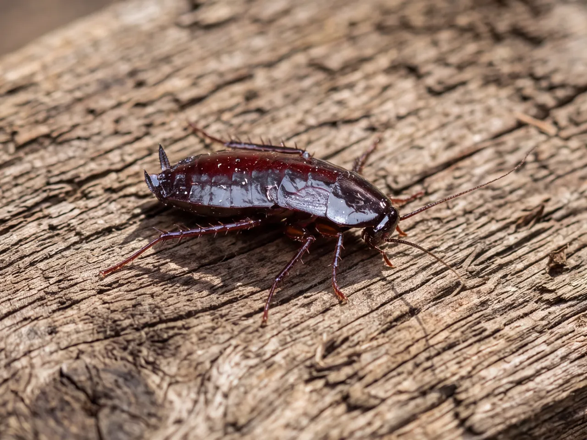
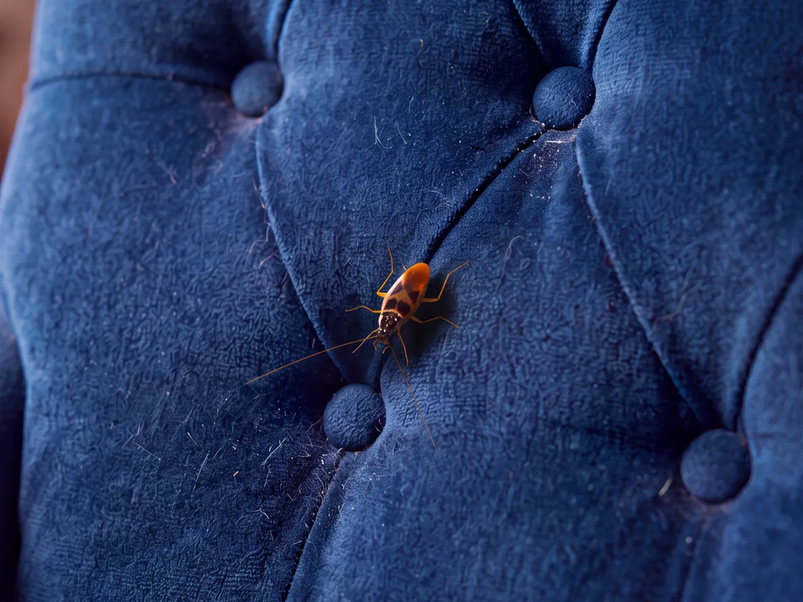
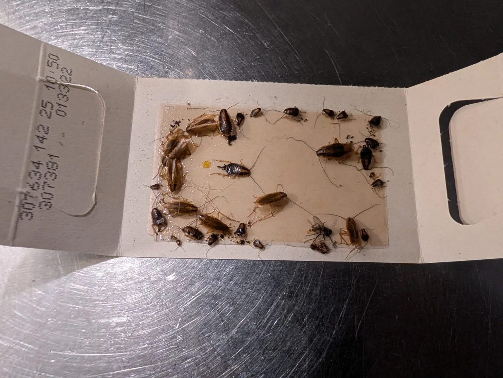
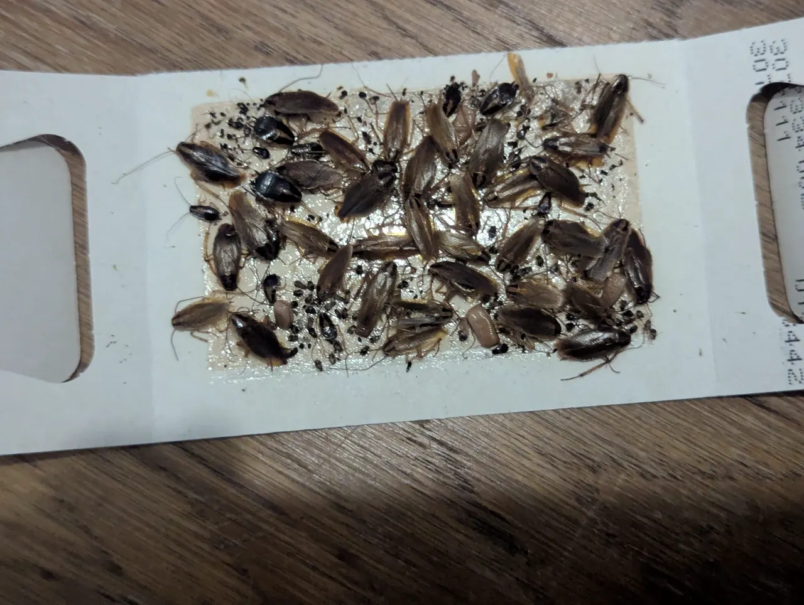
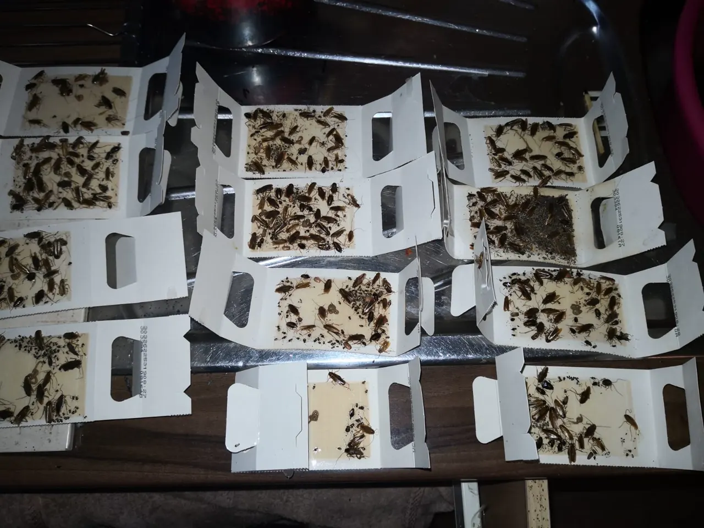
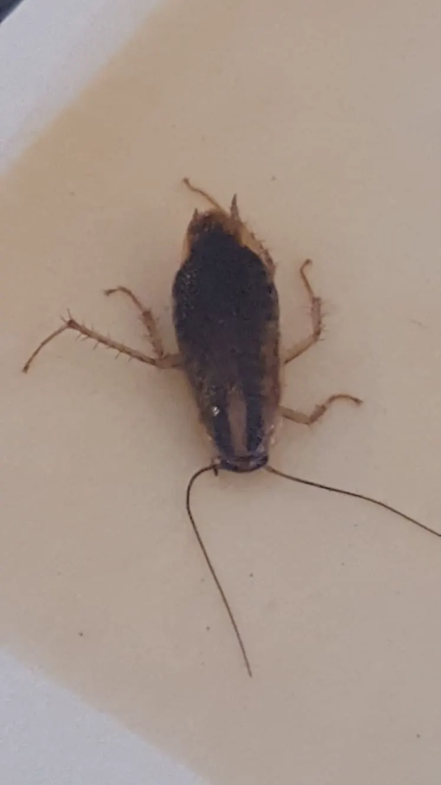
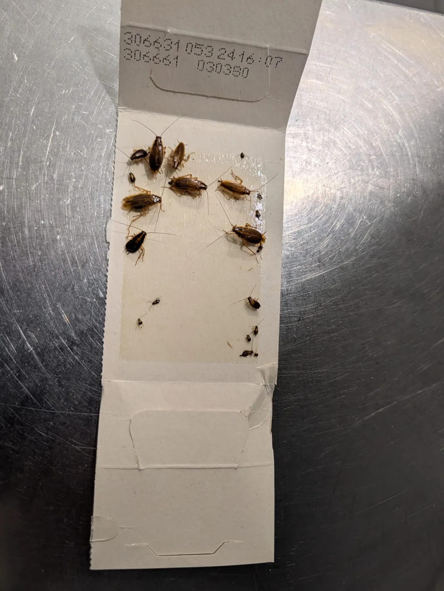

Deutsche Schabe
Blattella germanica
Etwa 14–16 mm lang, hellbraun. Auffällig sind zwei dunkle Längsbänder auf dem Halsschild. Häufig in warmen Bereichen mit Nahrungsangebot anzutreffen.

Bonn · Köln · Rhein-Sieg · Mannheim · Rhein-Neckar
Sicher bestimmen. Gezielt bekämpfen.
Neuem Befall vorbeugen.
Nicht wegsehen. Richtig einordnen.
Schaben sind meist nachts unterwegs und verstecken sich tagsüber. Deshalb lohnt es sich, schon einzelne Funde fachlich prüfen zu lassen.
Typische Hinweise sind lebende oder tote Tiere, dunkle Kotspuren, Häutungsreste und Eipakete. Häufig finden sich Verstecke in Ritzen, an Sockelleisten oder in der Nähe von Wärme, Nahrung und Feuchtigkeit – etwa hinter Küchengeräten und unter Spülen.
Ein einzelnes Tier kann aber auch eine harmlose Waldschabe sein. Ein möglichst scharfes Foto und der genaue Fundort helfen bei der Unterscheidung. Die sichere Artbestimmung steht vor einer Bekämpfung.

Welche Schabe ist es?
Die folgenden Merkmale geben eine Orientierung für erwachsene Tiere. Jungtiere sehen anders aus; Farbe oder Größe allein reichen zur Bestimmung nicht aus.

Blattella germanica
Etwa 14–16 mm lang, hellbraun. Auffällig sind zwei dunkle Längsbänder auf dem Halsschild. Häufig in warmen Bereichen mit Nahrungsangebot anzutreffen.

Blatta orientalis
Etwa 28–30 mm lang und dunkelbraun bis schwarz. Die Flügelausbildung unterscheidet sich bei Männchen und Weibchen. Eine genaue Prüfung ist wichtig.

Supella longipalpa
Etwa 10–15 mm lang, hell- bis dunkelbraun. Auch als Möbelschabe bekannt. Fundort und Entwicklungsstadium fließen in die fachliche Bestimmung ein.
Hygiene ernst nehmen – ohne Panik
Im Innenraum lebende Schädlingsarten können Lebensmittel mit Ausscheidungen verunreinigen und Keime verschleppen. Schaben und ihre Ausscheidungen können außerdem Allergien auslösen.
Ein Fund bedeutet nicht automatisch, dass jemand erkrankt ist. Er ist aber ein Anlass, den Verdacht zeitnah zu prüfen – besonders in Küchen, Gastronomie und Lebensmittelbetrieben.
Schaben werden unter anderem über Verpackungen, gebrauchte Geräte oder Reisegepäck eingeschleppt und können aus benachbarten Räumen zuwandern. Ein Befall ist deshalb nicht einfach ein Zeichen mangelnder Sauberkeit.
Professionelle Schabenbekämpfung
Von der ersten Einschätzung bis zur Nachkontrolle: Das Vorgehen richtet sich nach Art, Befallsumfang und Nutzung der Räume. Geeignete Maßnahmen werden objektbezogen abgestimmt.
Art bestimmen, Verstecke und mögliche Einwanderungswege prüfen. Klebefallen helfen, Aktivität und Schwerpunkte zu erfassen; allein beseitigen sie einen etablierten Befall in der Regel nicht.
Je nach Befund kommen beispielsweise fachgerecht platzierte Gelköder oder Köderstationen infrage. Die Auswahl und Anwendung von Mitteln gehört in sachkundige Hände – kein wahlloses Besprühen von Flächen.
Kontrolltermine zeigen, wie sich die Aktivität entwickelt. Hinweise zu Hygiene, Feuchtigkeit und baulichen Schwachstellen helfen, einen erneuten Befall zu erschweren.

Aus unserer Praxis
Schaben entwickeln sich über mehrere Stadien. Deshalb ist eine einmalige Sichtkontrolle kein belastbarer Nachweis dafür, dass ein Befall beendet ist.
Bei verbundenen Wohnungen oder Betrieben kann es sinnvoll sein, angrenzende Einheiten einzubeziehen. Hausverwaltung, Eigentümer und Nutzer sollten dafür gemeinsam mit dem Fachbetrieb vorgehen.
Situation besprechen →Aus der Praxis
Eigene Aufnahmen aus Einsätzen: von der vollen Klebefalle bis zum einzelnen Tier.



Zwei Regionen. Ein Ansprechpartner.
Ob Küche, Bad oder mehrere Wohneinheiten: Wir klären den Verdacht und besprechen das weitere Vorgehen. Informieren Sie als Mieter bei einem bestätigten Befall auch die Hausverwaltung oder den Vermieter.
In Küchen, Lagern und Lebensmittelbetrieben sind Befallserfassung, abgestimmte Maßnahmen und nachvollziehbare Kontrollen besonders wichtig. Wir besprechen mit Ihnen die Anforderungen Ihres Objekts.
Bonn / Rhein-Sieg / Köln
Bonn, Königswinter, Köln und Umgebung
Mannheim / Rhein-Neckar
Mannheim, Reilingen und Umgebung
Vorbeugen im Alltag
Hygiene unterstützt die Bekämpfung, ersetzt sie bei einem etablierten Befall aber nicht. Stimmen Sie Veränderungen an behandelten Stellen mit dem Fachbetrieb ab.
So geht es weiter
Fundort, Zeitpunkt und betroffene Räume nennen; ein Foto bereithalten.
Art und Situation klären, bei Bedarf Inspektion vor Ort vereinbaren.
Umfang, Behandlung und notwendige Kontrollen abstimmen.
Maßnahmen durchführen, Aktivität nachverfolgen und Prävention besprechen.

Gut zu wissen
Nicht zwingend. Einzelne Waldschaben können sich ins Haus verirren. Bei Innenraum-Schädlingsarten kann ein Fund jedoch auf weitere versteckte Tiere hinweisen. Entscheidend sind Artbestimmung und Kontrolle des Fundorts.
Fotografieren Sie das Tier möglichst scharf, notieren Sie Ort und Zeitpunkt und nehmen Sie Kontakt auf. Verschließen Sie Lebensmittel und vermeiden Sie ungezielte Sprays. Bringen Sie möglicherweise befallene Geräte nicht in andere Wohnungen.
Klebefallen dienen vor allem dem Nachweis, der Ortung und der Verlaufskontrolle. Einen etablierten Befall beseitigen sie allein in der Regel nicht. Die passende Bekämpfung wird nach Bestimmung der Art und Prüfung des Objekts festgelegt.
Das hängt unter anderem von Art, Befallsstärke, Verstecken und möglicher Zuwanderung ab. Es können mehrere Termine erforderlich sein. Eine feste Dauer oder einen garantierten Erfolg ohne Untersuchung zu versprechen, wäre nicht seriös.
Der Aufwand richtet sich nach dem konkreten Objekt, dem Befallsumfang und den erforderlichen Kontrollen. Nach Klärung der Situation erhalten Sie ein individuelles Angebot.
Informieren Sie uns vor der Behandlung über Kinder, Haustiere und besondere Anforderungen. Köder und andere Mittel dürfen für sie nicht erreichbar sein. Beachten Sie die vereinbarten Schutz- und Nutzungshinweise.
Das kann erforderlich sein: Schaben können aus angrenzenden Einheiten zuwandern. Hausverwaltung und Fachbetrieb sollten gemeinsam klären, welche Bereiche kontrolliert werden müssen.
Falkner Schädlingsbekämpfung GmbH
Sagen Sie uns, wo und wann Sie Tiere bemerkt haben. Mit Foto und Ortsangabe können wir die nächsten Schritte besser einschätzen.
Der E-Mail-Link öffnet Ihr eigenes Mailprogramm. Diese Website verschickt keine Nachrichten.
Bonn / Rhein-Sieg / Köln
Rhein-Sieg
Mannheim / Rhein-Neckar
Rhein-Neckar
Angaben gemäß § 5 DDG
Falkner Schädlingsbekämpfung GmbH
Heinrich-Heine-Str. 41
53225 Bonn
Deutschland
Hauptsitz / Sitz der Gesellschaft: Bonn
Weitere Standorte
Am Lindenbaum 14, 53639 Königswinter
Neuhofer Straße 15, 68219 Mannheim
Erich-Kästner-Ring 13, 68799 Reilingen
Vertreten durch
Geschäftsführer: Dipl.-Wirtsch.-Ing. Michael Falkner
Kontakt
Telefon Bonn (Hauptsitz): 0228 4336945
Telefon Königswinter: 02244 8732038
Telefon Mannheim: 0621 72492117
Telefon Reilingen: 06205 202135
E-Mail: mail@falkner-sbk.de
Website: www.falkner-sbk.de
Umsatzsteuer-ID
Umsatzsteuer-Identifikationsnummer gemäß § 27a UStG: DE259876663
Registereintrag
Eintragung im Handelsregister. Registergericht: Amtsgericht Bonn. Registernummer: HRB 16142
Verantwortlich für den Inhalt nach § 18 Abs. 2 MStV
Dipl.-Wirtsch.-Ing. Michael Falkner, c/o Falkner Schädlingsbekämpfung GmbH, Heinrich-Heine-Str. 41, 53225 Bonn
Verbraucherstreitbeilegung
Wir sind nicht bereit und nicht verpflichtet, an Streitbeilegungsverfahren vor einer Verbraucherschlichtungsstelle teilzunehmen.
Haftung für Inhalte und Links
Die Inhalte dieser Website wurden mit größter Sorgfalt erstellt. Für Richtigkeit, Vollständigkeit und Aktualität kann jedoch keine Gewähr übernommen werden. Die Hinweise ersetzen keine Untersuchung vor Ort. Diese Website enthält Links zu externen Websites Dritter (z. B. Umweltbundesamt), auf deren Inhalte wir keinen Einfluss haben; für diese Inhalte ist stets der jeweilige Anbieter verantwortlich.
1. Verantwortlicher
Falkner Schädlingsbekämpfung GmbH, Heinrich-Heine-Str. 41, 53225 Bonn (Hauptsitz / Sitz der Gesellschaft), vertreten durch den Geschäftsführer Dipl.-Wirtsch.-Ing. Michael Falkner. E-Mail: mail@falkner-sbk.de · Telefon: 0228 4336945
2. Das Wichtigste in Kürze
Diese Website ist eine rein statische Seite. Es werden keine Cookies gesetzt, es gibt kein Tracking, keine Analyse-Tools, keine Kontaktformulare und keine eingebetteten Inhalte von Drittanbietern. Schriften, Bilder, Videos und Skripte werden direkt von diesem Webspace geladen.
3. Hosting über GitHub Pages
Diese Website wird über GitHub Pages bereitgestellt. Anbieter ist die GitHub, Inc., 88 Colin P. Kelly Jr. Street, San Francisco, CA 94107, USA. Beim Aufruf der Website verarbeitet GitHub technisch notwendige Daten in Server-Logfiles, insbesondere IP-Adresse, Datum und Uhrzeit des Zugriffs, aufgerufene Datei, übertragene Datenmenge, Referrer sowie Browser- und Betriebssysteminformationen. Rechtsgrundlage ist Art. 6 Abs. 1 lit. f DSGVO (berechtigtes Interesse an einer sicheren und stabilen Bereitstellung). Eine Übermittlung in die USA ist möglich; GitHub, Inc. ist nach dem EU-US Data Privacy Framework zertifiziert (Art. 45 DSGVO). Weitere Informationen: Datenschutzerklärung von GitHub.
4. Kontakt per Telefon und E-Mail
Der E-Mail-Link auf dieser Seite überträgt keine Daten an uns oder an Dritte; er öffnet lediglich Ihr eigenes E-Mail-Programm. Wenn Sie uns anrufen oder eine E-Mail senden, verarbeiten wir Ihre Angaben (z. B. Name, Kontaktdaten, Fundort, Fotos), um Ihre Anfrage zu bearbeiten und ggf. einen Auftrag durchzuführen. Rechtsgrundlage ist Art. 6 Abs. 1 lit. b DSGVO (Vertragsanbahnung/-erfüllung) bzw. lit. f DSGVO (allgemeine Anfragen). Die Daten werden gelöscht, sobald sie nicht mehr erforderlich sind und keine gesetzlichen Aufbewahrungspflichten entgegenstehen.
5. Externe Links
Diese Website enthält einfache Links zu externen Seiten (z. B. Umweltbundesamt, unsere Firmenseite). Beim bloßen Besuch dieser Website werden keine Daten an diese Anbieter übertragen; erst beim Anklicken gelten deren Datenschutzbestimmungen.
6. Verschlüsselung
Die Übertragung der Seiteninhalte erfolgt über die Infrastruktur von GitHub Pages; sobald für diese Domain ein TLS-Zertifikat aktiv ist, wird die Website über eine verschlüsselte HTTPS-Verbindung ausgeliefert. Über diese Website werden keine Formulardaten oder sonstigen Eingaben übermittelt.
7. Ihre Rechte
Sie haben das Recht auf Auskunft (Art. 15 DSGVO), Berichtigung (Art. 16), Löschung (Art. 17), Einschränkung der Verarbeitung (Art. 18), Datenübertragbarkeit (Art. 20) sowie Widerspruch gegen Verarbeitungen auf Grundlage von Art. 6 Abs. 1 lit. f DSGVO (Art. 21). Außerdem können Sie sich bei einer Datenschutz-Aufsichtsbehörde beschweren, z. B. bei der für unseren Sitz (Bonn) zuständigen Landesbeauftragten für Datenschutz und Informationsfreiheit Nordrhein-Westfalen (LDI NRW), Kavalleriestraße 2–4, 40213 Düsseldorf.
Stand: November 2026
Grundlage der allgemeinen Informationen: Umweltbundesamt: Schaben (aktualisiert 24.09.2026) sowie das dort bereitgestellte PAN-Informationsblatt Schaben/Kakerlaken. Die Hinweise ersetzen keine Untersuchung vor Ort.
Bildnachweise: Alle Fotos und Videos auf dieser Website (Artfotos, Galerie, Einsatzfotos und beide Videos) sind eigene Aufnahmen. Fotos: © Falkner Schädlingsbekämpfung GmbH. Videos: © Falkner Schädlingsbekämpfung GmbH. Alle Rechte vorbehalten. Die Bilder wurden für die Website zugeschnitten und verkleinert, die Videos ohne Tonspur konvertiert.